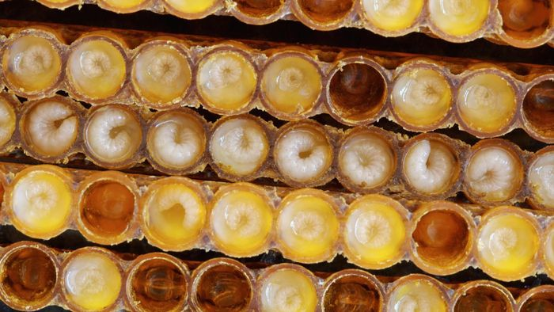
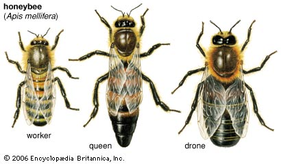
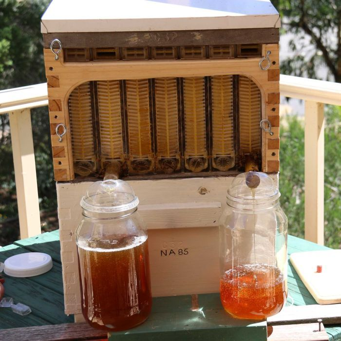

The Honey Bee
A honey bee is any member of the genus Apis, primarily distinguished by the production and storage of honey and the construction of perennial, colonial nests from wax. Currently, only seven species of honey bee are recognized, with a total of 44 subspecies, though historically six to eleven species are recognized. The best known honey bee is the Western honey bee which has been domesticated for honey production and crop pollination. Honey bees represent only a small fraction of the roughly 20,000 known species of bees. Some other types of related bees produce and store honey, including the stingless honey bees, but only members of the genus Apis are true honey bees.

Life Cycle
As in a few other types of eusocial bees, a colony generally contains one queen bee, a fertile female; seasonally up to a few thousand drone bees, or fertile males; and tens of thousands of sterile female worker bees. Details vary among the different species of honey bees, but common features include:
 Eggs are laid singly in a cell in a wax honeycomb, produced and shaped by the worker bees. Using her spermatheca, the queen can choose to fertilize the egg she is laying, usually depending on into which cell she is laying. Drones develop from unfertilized eggs and are haploid, while females (queens and worker bees) develop from fertilized eggs and are diploid. Larvae are initially fed with royal jelly produced by worker bees, later switching to honey and pollen. The exception is a larva fed solely on royal jelly, which will develop into a queen bee. The larva undergoes several moultings before spinning a cocoon within the cell, and pupating.
Eggs are laid singly in a cell in a wax honeycomb, produced and shaped by the worker bees. Using her spermatheca, the queen can choose to fertilize the egg she is laying, usually depending on into which cell she is laying. Drones develop from unfertilized eggs and are haploid, while females (queens and worker bees) develop from fertilized eggs and are diploid. Larvae are initially fed with royal jelly produced by worker bees, later switching to honey and pollen. The exception is a larva fed solely on royal jelly, which will develop into a queen bee. The larva undergoes several moultings before spinning a cocoon within the cell, and pupating.
Young worker bees, sometimes called "nurse bees", clean the hive and feed the larvae. When their royal jelly-producing glands begin to atrophy, they begin building comb cells. They progress to other within-colony tasks as they become older, such as receiving nectar and pollen from foragers, and guarding the hive. Later still, a worker takes her first orientation flights and finally leaves the hive and typically spends the remainder of her life as a forager.

Worker bees cooperate to find food and use a pattern of "dancing" (known as the bee dance or waggle dance) to communicate information regarding resources with each other; this dance varies from species to species, but all living species of Apis exhibit some form of the behavior. If the resources are very close to the hive, they may also exhibit a less specific dance commonly known as the "round dance".
Honey bees also perform tremble dances, which recruit receiver bees to collect nectar from returning foragers.
Virgin queens go on mating flights away from their home colony to a drone congregation area, and mate with multiple drones before returning. The drones die in the act of mating. Queen honey bees do not mate with drones from their home colony.
 Colonies are established not by solitary queens, as in most bees, but by groups known as "swarms", which consist of a mated queen and a large contingent of worker bees. This group moves en masse to a nest site which was scouted by worker bees beforehand and whose location is communicated with a special type of dance. Once the swarm arrives, they immediately construct a new wax comb and begin to raise new worker brood. This type of nest founding is not seen in any other living bee genus, though several groups of vespid wasps also found new nests by swarming (sometimes including multiple queens). Also, stingless bees will start new nests with large numbers of worker bees, but the nest is constructed before a queen is escorted to the site, and this worker force is not a true "swarm".
Colonies are established not by solitary queens, as in most bees, but by groups known as "swarms", which consist of a mated queen and a large contingent of worker bees. This group moves en masse to a nest site which was scouted by worker bees beforehand and whose location is communicated with a special type of dance. Once the swarm arrives, they immediately construct a new wax comb and begin to raise new worker brood. This type of nest founding is not seen in any other living bee genus, though several groups of vespid wasps also found new nests by swarming (sometimes including multiple queens). Also, stingless bees will start new nests with large numbers of worker bees, but the nest is constructed before a queen is escorted to the site, and this worker force is not a true "swarm".

Beekeeping
Two species of honey bee, A. mellifera and A. cerana indica, are often maintained, fed, and transported by beekeepers. Modern hives also enable beekeepers to transport bees, moving from field to field as the crop needs pollinating and allowing the beekeeper to charge for the pollination services they provide, revising the historical role of the self-employed beekeeper, and favoring large-scale commercial operations.

Honey
Honey is the complex substance made when bees ingest nectar, process it, and store the substance into honey combs. All living species of Apis have had their honey gathered by indigenous peoples for consumption. A. mellifera and A. cerana are the only species that have had their honey harvested for commercial purposes. Honey is sometimes also gathered by humans from the nests of various stingless bees. In 1911, a bee culturist estimated a litre (about a quart) of honey represented bees flying over an estimated 48,000 miles to gather the nectar needed to produce the honey.

Drones
Males, or drones, are typically haploid, having only one set of chromosomes and primarily exist for the purpose of reproduction. They are produced by the queen if she chooses not to fertilize an egg or by an unfertilized laying worker. Diploid drones may be produced if an egg is fertilized but is homozygous for the sex-determination allele. Drones take 24 days to develop and may be produced from summer through to autumn, numbering as many as 500 per hive. They are expelled from the hive during the winter months when the hive's primary focus is warmth and food conservation. Drones have large eyes used to locate queens during mating flights. They do not defend the hive or kill intruders, and do not have a stinger.

Workers
Workers have two sets of chromosomes. They are produced from an egg that the queen has selectively fertilized from stored sperm. Workers typically develop in 21 days. A typical colony may contain as many as 60,000 worker bees. Workers exhibit a wider range of behaviors than either queens or drones. Their duties change upon the age of the bee in the following order (beginning with cleaning out their own cell after eating through their capped brood cell): feed brood; receive nectar, clean hive, guard duty, and foraging. Some workers engage in other specialized behaviors, such as "undertaking" (removing corpses of their nestmates from inside the hive). Workers have morphological specializations, including the pollen basket (corbicula), abdominal glands that produce beeswax, brood-feeding glands, and barbs on the sting. Under certain conditions (for example, if the colony becomes queenless), a worker may develop ovaries.

Queens
Queen honey bees are created when worker bees feed a single female larvae an exclusive diet of a food called "royal jelly". Queens are produced in oversized cells and develop in only 16 days; they differ in physiology, morphology, and behavior from worker bees. In addition to the greater size of the queen, she has a functional set of ovaries, and a spermatheca, which stores and maintains sperm after she has mated. Apis queens practice polyandry, with one female mating with multiple males. The highest documented mating frequency for an Apis queen is in Apis nigrocincta, where queens mate with an extremely high number of males with observed numbers of different mattings ranging from 42 to 69 drones per queen. The sting of queens is not barbed like a worker's sting, and queens lack the glands that produce beeswax. Once mated, queens may lay up to 2,000 eggs per day. They produce a variety of pheromones that regulate behavior of workers, and helps swarms track the queen's location during the swarming.